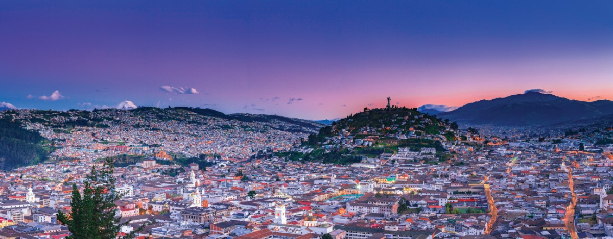
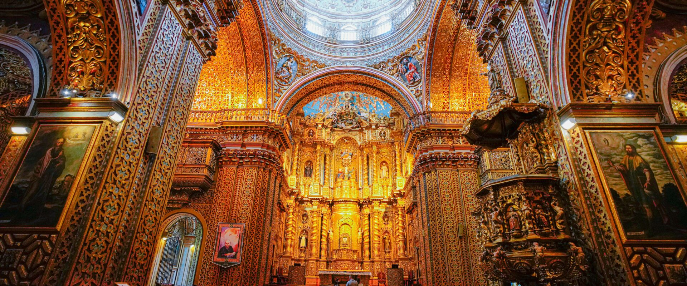
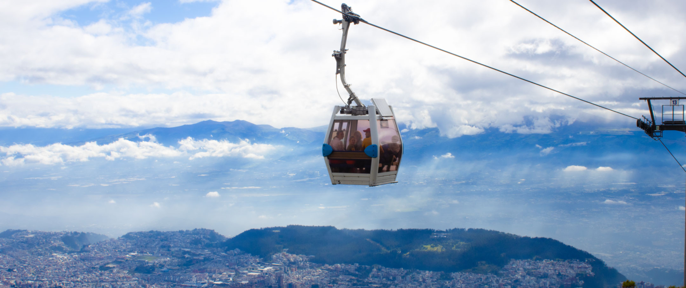
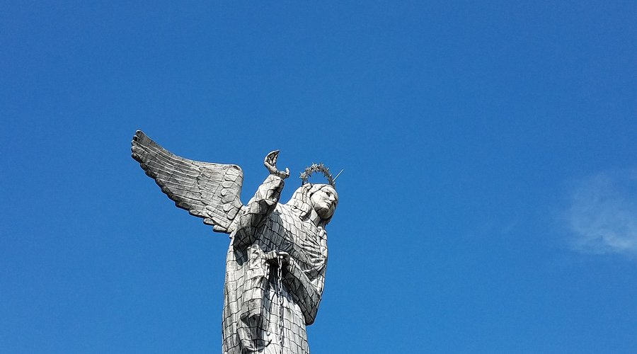
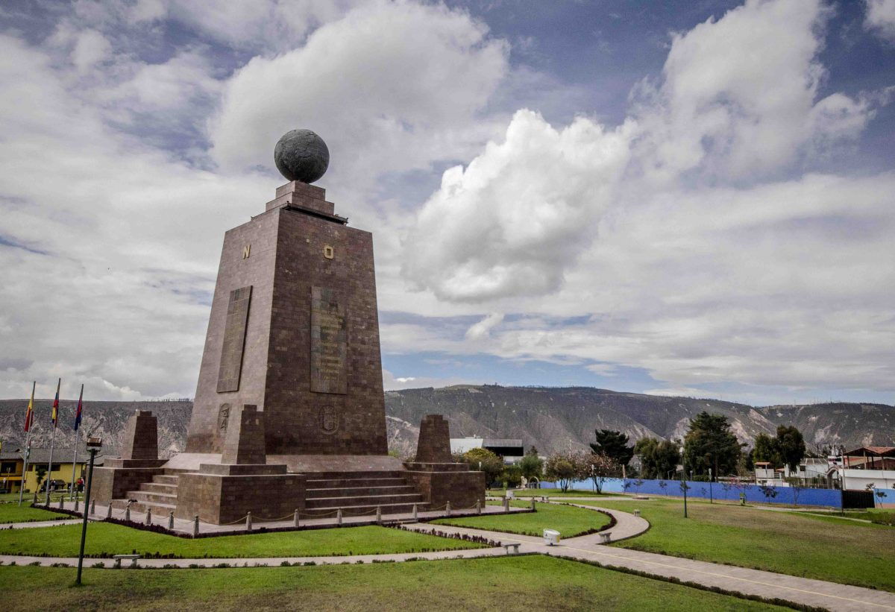

🌍
Ubicación
Sierra norte del Ecuador, en las laderas del volcán Pichincha
Historia, cultura y naturaleza en un solo destino.
Conoce más →Una ciudad que combina historia colonial, modernidad y paisajes volcánicos
Sierra norte del Ecuador, en las laderas del volcán Pichincha
2.850 m.s.n.m., segunda capital más alta del mundo
Primaveral todo el año: entre 10°C y 22°C en promedio
Aproximadamente 2.8 millones de habitantes en el área metropolitana
San Francisco de Quito, fundada el 6 de diciembre de 1534 por Sebastián de Benalcázar, es la capital de la República del Ecuador y de la provincia de Pichincha. Se extiende sobre una meseta andina rodeada de volcanes nevados como el Cotopaxi, el Antisana y el Cayambe.
Su casco histórico, declarado Patrimonio Cultural de la Humanidad por la UNESCO en 1978, fue el primero en recibir esta distinción junto con la ciudad de Cracovia en Polonia. Posee uno de los centros coloniales mejor conservados de toda América Latina, con más de 130 edificaciones monumentales y 5.000 inmuebles registrados en el inventario patrimonial.
Quito es una ciudad de contrastes: su centro colonial, con iglesias barrocas y plazas centenarias, convive con barrios modernos llenos de gastronomía, arte contemporáneo y vida nocturna. Rodeada de naturaleza, ofrece acceso rápido a páramos, bosques nublados y valles subtropicales.

Explora los sitios más emblemáticos de la ciudad

El casco colonial mejor conservado de América, con más de 40 iglesias y miles de edificios patrimoniales.
Explorar lugar →
Asciende a más de 4.000 metros y contempla la ciudad desde las alturas del volcán Pichincha.
Explorar lugar →
La icónica colina con la Virgen alada que ofrece vistas panorámicas de 360° de toda la ciudad.
Explorar lugar →
Párate en la línea equinoccial, donde se unen los hemisferios norte y sur del planeta.
Explorar lugar →| Dato | Información |
|---|---|
| País | Ecuador |
| Fundación | 6 de diciembre de 1534 |
| Idioma oficial | Español (también kichwa en comunidades cercanas) |
| Moneda | Dólar estadounidense (USD) |
| Aeropuerto | Mariscal Sucre (UIO) |
| Patrimonio UNESCO | Desde 1978 (primer sitio declarado) |